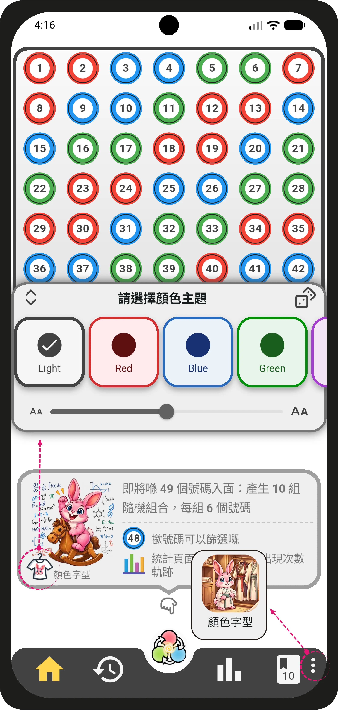
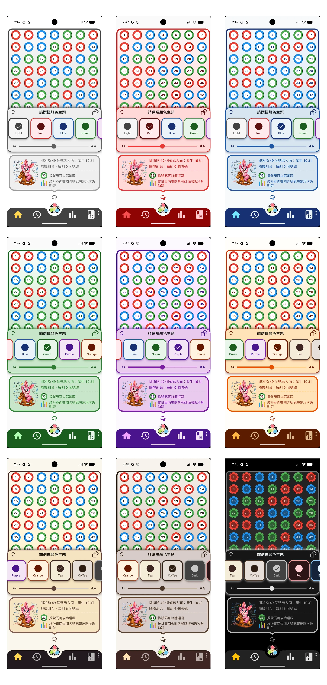
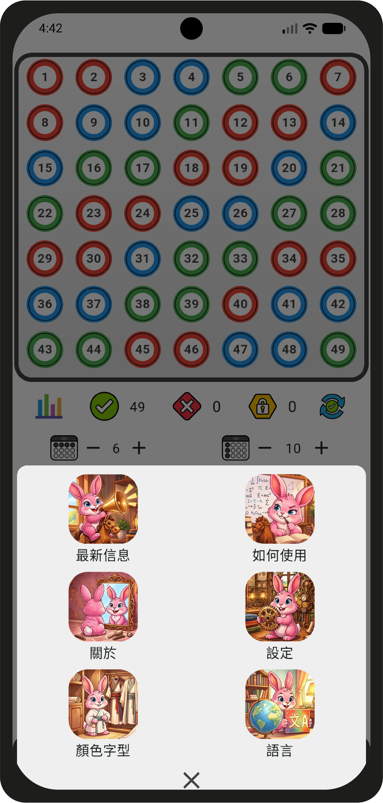
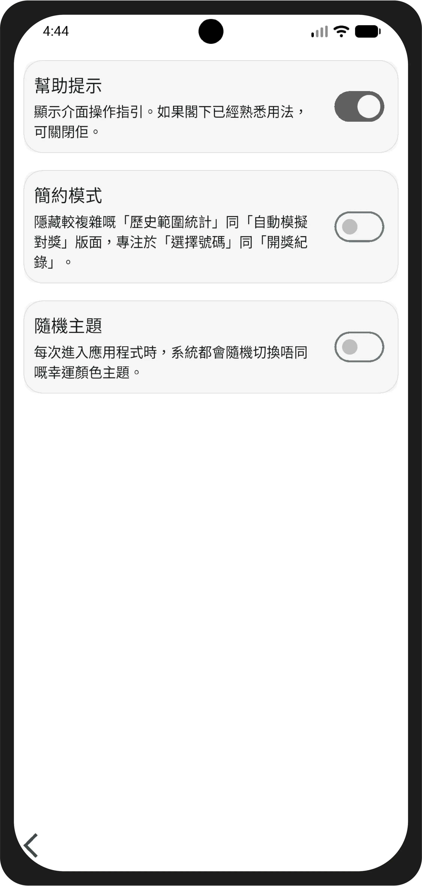

重大更新：版本 1.2.0
Major Update: Version 1.2.0
2026-10-02
請到商店搜尋 六合彩統計 或 Mark 6 Stats 更新
Please search Mark 6 Stats in App Store / Google Play to update
提供 18 款主題配色（包含淺色與深色模式）
/ 18 Theme Colors Available
PAGE 2
點擊「顏色字型」即可開啟主題切換視窗，可自由選擇不同的顏色主題與字型大小。
Tap "Color & Font" to open the theme switcher window, where you can freely choose from different color themes and font sizes.

PAGE 1
支援選擇時即時預覽與套用；全面重構自適應 UI 介面，徹底修復行動裝置在大字型設定下的排版錯亂問題。
Supports live preview and instant apply when selecting. Fully rebuilt adaptive UI that completely fixes layout issues on mobile devices when large font size is enabled.

側邊選單升級
/ Side Menu Upgrade
PAGE 1
側邊選單升級為底部圖形按鈕選單，除上面介紹的「顏色字型」外，還新增「最新消息」、「如何使用」兩個專欄。「最新消息」將介紹應用程式的最新動態或其他通知，重要的發展方向與規劃將在「關於」中列明；「如何使用」將以圖片或影片方式介紹各功能組合，並持續更新教學內容。
The side menu has been upgraded to a bottom icon button menu. In addition to the "Color & Font" introduced above, two new sections, "What's New" and "How to Use", have been added. "What's New" will cover the latest updates and notifications, with important development plans listed under "About"; "How to Use" introduces feature combinations through images and videos, with tutorials updated continuously.

PAGE 2
新增兩項設定：1. 簡約模式，讓使用者專注於常用的功能頁面；2. 隨機主題，每次開啟應用程式時皆會隨機載入不同的主題。
Two new settings added: 1. Minimalist Mode, allowing users to focus on frequently used pages; 2. Random Theme, which loads a different theme randomly each time the app is launched.

⭐⭐⭐⭐⭐
請開啟Google Play，搜尋：
六合彩統計
Mark 6 Stats
點擊進入頁面完成更新，順便請給予五星好評！
（當然留待下次再給予評論亦可，因為此應用程式的開發永不止於此……）
Search "Mark 6 Stats" on App Store / Google Play to update and please leave a five-star review!
(Or feel free to leave a review next time — development for this app never stops...)